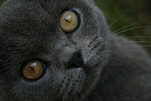

British Shorthair Cat
The British Shorthair is a domesticated cat whose features make it a popular breed in cat shows. It has been the most popular breed of cat registered by the UK's Governing Council of the Cat Fancy (GCCF) since 2001, when it overtook the Persian breed.The British Shorthair is a very muscular cat, with a "square" body shape and thick legs. British Shorthairs have large, broad heads. Their eyes stand out and tend to be large and round. Their relatively small ears with rounded tips are set far apart. They have pert snub noses and slightly rounded chins.
British Shorthair Cat Breed Description  Source repository